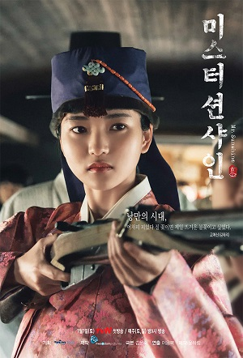

|  | 고애신사대부 영애 |
"나도 그렇소 나도 꽃으로 살고 있소. |
|
애신의 방에서 서책 갈피에 몰래 숨겨놓은 ‘한성순보’와 ‘독닙신문’이 발각된 날, 조부의 눈빛은 노여움이 아니라 슬픔이었다. 멧짐승 고기가 먹고 싶으니 포수를 찾아가란 조부의 심부름은 그날부터였다. 조부의 당부는 딱 하나였다. 살아 남거라. 애신의 나이 스물이었고, 그날부터 장포수는 애신의 스승이었다. 장포수는 화약 다루는 법, 총기류 다루는 법, 사격술 등을 가르쳤고 9년이 흐른 지금, 애신의 타깃은 빗나가는 법이 없었다. 그런 애신이 시시하지 않은 남자를 만난 건 한성에 첫 가로등이 켜지던 순간이었다. 이기적인 배려, 차가워서 다정한, 자신의 조국은 미국이라는, 자기 생에서도 이방인인 사내, 유진이었다. 그 사내의 심장이 자신의 타깃이 되지 않기를 간절히 비는 애신이었다... |